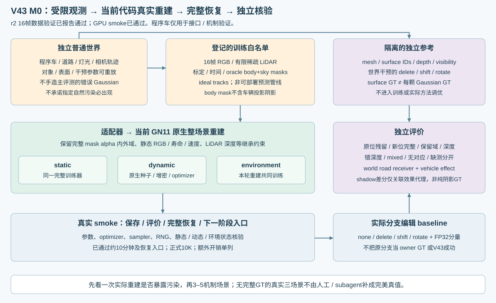
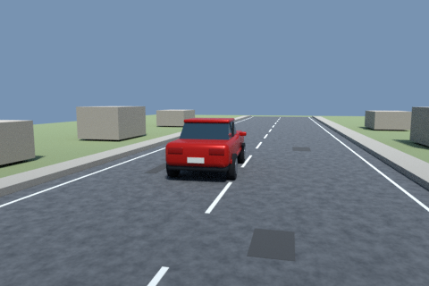
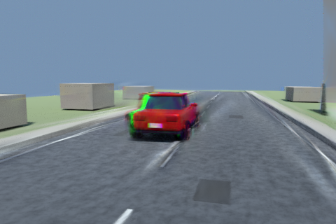
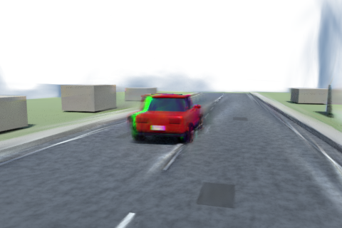

同帧独立参考与实际编辑
本处操作作用于整个已学习动态分支，是当前重建的分支编辑基线。不能称为正确归属或理想编辑。白色表示透射／空洞，不能解释为背景已补好。
Revision 5 · M0 · 2026-10-30。已完成普通仿真场景→受限观测→当前原生代码10K重建→独立编辑参考的第一条实际链路，并自然复现了删除动态分支后仍有车形残影的问题。
程序化普通车、道路和灯光，仅作接口与机制验证。未训练新的 V43 联合模块，未在真实场景一训练分类器，也不把此单场景当泛化证据。

训练读取 16 帧 480×320 RGB、稀疏 LiDAR、相机和时间；当前条件显式使用 simulator oracle body/sky masks 和 ideal tracks。完整网格、稠密深度、表面 ID、隐藏表面和编辑参考隔离在 privileged 目录，未参与初始化或训练。
GT 在世界表面与对象上。每颗高斯不强制唯一 owner；原动静态分支不是 GT。阴影属于道路接收面上的车辆关联效应，32 samples 开关差分只作含采样误差的诊断代理，不作纯阴影标签。
本处操作作用于整个已学习动态分支，是当前重建的分支编辑基线。不能称为正确归属或理想编辑。白色表示透射／空洞，不能解释为背景已补好。
中间时刻，世界Y方向偏移1m并重新朝向车辆；该相机图像未参与训练。仅一个视角，不能作泛化结论。



| 项目 | 实测 |
|---|---|
| GPU smoke | 两段各至少300秒训练循环墙钟；保存／评价开销扣除，完整恢复与下一阶段none/delete实际渲染通过。收据 |
| 正式预算 | 从零 10,000 更新；沿用原方法 30,000 步学习率周期，没有为了短程压缩日程；5K/10K保存。 |
| smoke与额外开销 | 6702 smoke更新 + 2 恢复入口更新，另有317步计时探测；不计入正式10K。 |
| 输入适配修复 | r1仿真delete配对含1LSB噪声，r2关闭抖动／去噪并修正网格法线；r3掩码查询floor(uv)修正半像素错配，K与姿态不变。旧现场保留。 |
| 原生不编辑一致性 | 3关键帧重放最大差 0.0；训练相机/K复核通过；评价无参数更新。 |
RGB MAE归一化到0–1；区域来自独立可见表面。原车体投影区域在删除后应与无车参考比较。这些数值不等于高斯归属准确率，也不自动把误差判成残影。
| 帧 | 操作 | 原车体区域像素 | 原车体区域MAE | 道路MAE |
|---|---|---|---|---|
| 000000 | none | 5238 | 0.0169 | 0.0041 |
| 000000 | delete | 5238 | 0.1549 | 0.0176 |
| 000000 | shift | 5238 | 0.1601 | 0.0167 |
| 000000 | rotate | 5238 | 0.2000 | 0.0146 |
| 000008 | none | 4804 | 0.0151 | 0.0032 |
| 000008 | delete | 4804 | 0.1612 | 0.0158 |
| 000008 | shift | 4804 | 0.2004 | 0.0151 |
| 000008 | rotate | 4804 | 0.2704 | 0.0147 |
| 000015 | none | 4715 | 0.0175 | 0.0037 |
| 000015 | delete | 4715 | 0.1484 | 0.0156 |
| 000015 | shift | 4715 | 0.2074 | 0.0135 |
| 000015 | rotate | 4715 | 0.2612 | 0.0228 |
真实三场景没有完整GT；人工／subagent核验不当作完美GT。M1/M2称为真值辅助参考，不能称为数学上界。AutoDL保持开机。